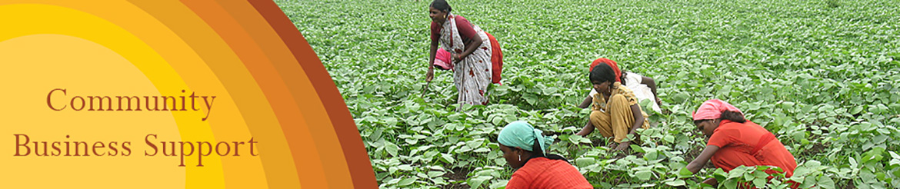
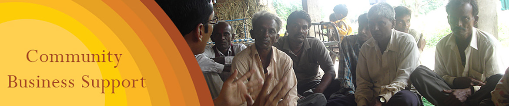
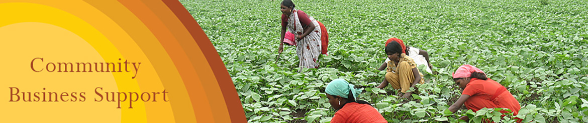
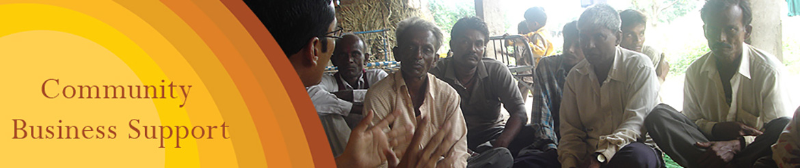
 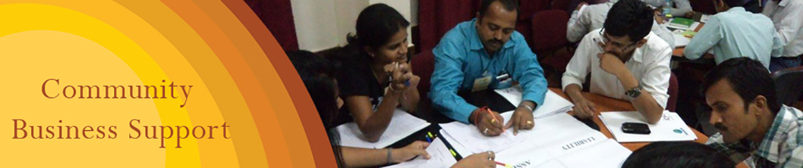
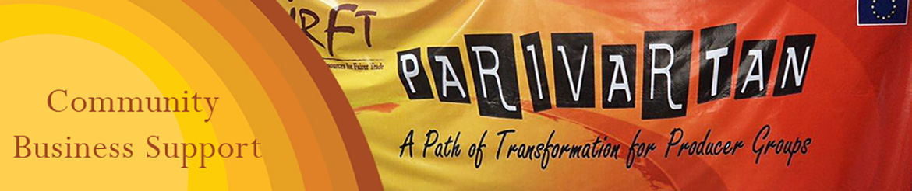
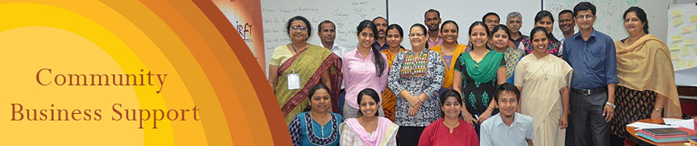
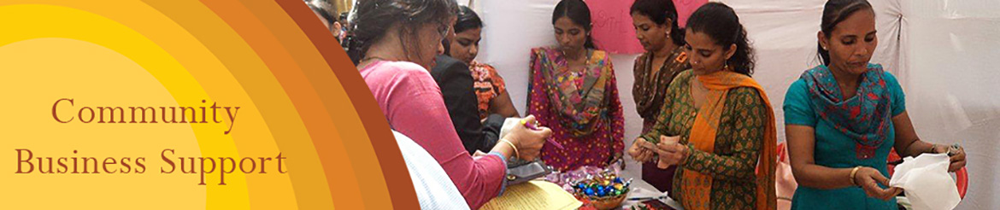
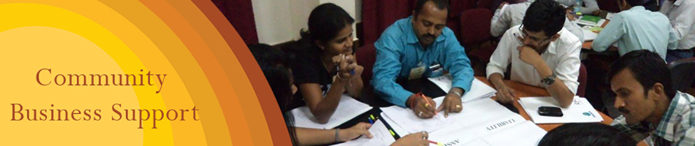
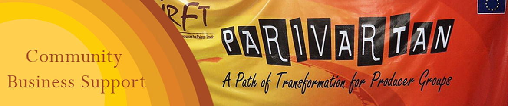
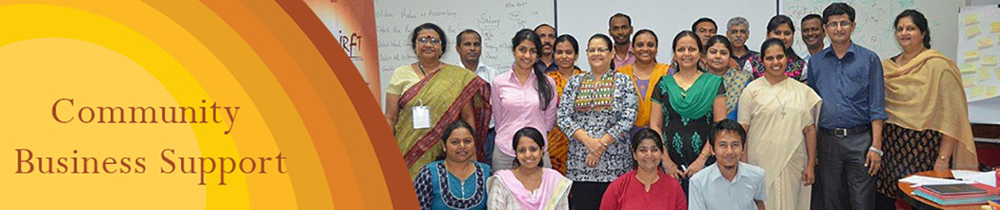
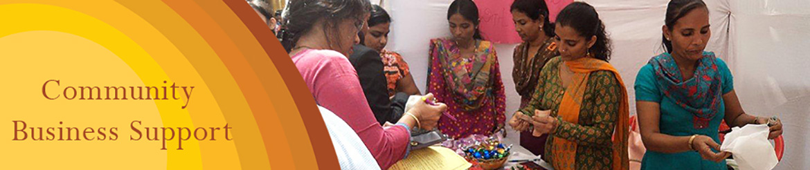
- IRFT invites you to Parivartan Crafts Mela on 16th October 2016. Follow Us on Facebook for more Updates.
- Fire Safety Workshop with Bombay Chambers of Commerce and Industry (BCCI).
- IRFT engaged in a ‘Capacity Building Project on Decent Work’ for Ambuja Cement Foundation.
- IRFT celebrates World Fair Trade Week from 9th to 15th May 2015. Follow Us on Facebook for more Updates.


Archives
Significant Project in the Past
Agrocel Industries
It was started in 1988 by the Excel Group of Companies at Mandvi-Kutch with the objective of providing latest agro inputs and technical guidance to farmers in order to increase productivity. Their activities include distribution of agro inputs such as seeds, organic manures and pesticides, technical inputs through field personnel, organic farming promotion and marketing support. The products include organic and near-to-organic cotton fibre, yarn, T-shirts, nuts, rice, pulses, sugar, spices etc. IRFT provided them capacity building inputs, market linkages and market research.
Professional Assistance for Development Action (PRADAN)
PRADAN was established in 1983. PRADAN currently works in selected villages in 26 districts across 7 states through small teams based in the field. The focus of its work is to promote and strengthen livelihoods for the rural poor. This involves organizing them, enhancing their capabilities, introducing ways to improve their incomes and linking them to banks, markets and other economic services. PRADAN has partnered with IRFT to build the capacity of their income generation activities (mushroom cultivation) in Madhya Pradesh. We successfully completed market research for mushrooms in order to find out new markets for mushrooms grown by beneficiaries of PRADAN and we have developed a distribution chain for mushrooms in major markets like Mumbai, Pune, etc. We have also linked PRADAN with cooperatives like APNA Bazaar.
Syngenta Seeds Inc.
A Swiss-based company joined the Fair Labor Association (FLA) as the first agricultural company to apply its monitoring methodology as a pilot multi-stakeholder programme. IRFT have created social awareness through training programs with Staff and other Stakeholders of Syngenta Seeds Inc. to help Syngenta field staff to effectively tackle compliance issues faced in the field. The training aimed at developing acceptance of the need to take positive steps in code of conduct compliance, through effective communication tools that disseminate the core messages and simplify the code of compliance as beneficial to all stakeholders involved. This was a multi-linguial, multi-state project and presently completed in 3 states of Maharashtra, Gujarat & Karnataka.
Mahiti Rural Development Centre, Dholera, Gujarat
Mahiti is a grassroots level non government development organization working in the most backward coastal region for socially and economically exploited and disadvantaged communities of Gujarat called Bhal. Right from inception it has prioritized women and gender issues in disaster prone Bhal frequented by earthquake, floods, and drought. The organization evolved from its ‘grassroots group’ orientation to a full-fledged institution. People of Bhal relate with Mahiti as an organization created and nurtured by them. Presently it works with almost around 6000 women members and are in process of initiating income generation activities in Bhal region. IRFT has undertaken a study for identification of viable income generation activities in the given region. IRFT has also prepared action plan cum strategies for implementing the identified activity. Along with MAHITI, IRFT is played major supportive agency role while implementing the Income generation programmes
Dharampur Utthan Vahini (DHRUVA), Navsari, Gujarat
DHRUVA was founded by BAIF with the objective of bringing about sustainable improvement in the lives of tribals in the hilly areas of Dharampur, Kaprada and Vansda located in South Gujarat. Dhruva operates through Vasundhara, which is the largest co-operative of Navsari District with 2300 members. Vasundhara’s core activities are value addition to the agricultural produce of the farmers and subsequent marketing with a focus on employment generation and tribal upliftment. IRFT has been working with them on providing technical inputs as well as building managerial capacity and have also undertaken market research and market linkage activity.
Kalyani Mahila Grih Udyog, Gujarat
It is a co-operative based in Gujarat (Udhwada). It is a rural initiative of the SNDT University with special focus on rural women. Their skill lies into tailoring and block printing. We, the IRFT were associated with this organisation for their Organisational development and Market linkages. Today Kalyani-cooperative managed to retained those clients and have successfully become financially sustainable.
Aga khan Rural support programme (India), AKRSP (I), Gujarat
AKRSP (I) is a non-denominational, non- government development organization. It works as a catalyst for the betterment of rural communities by providing direct support to local communities to promote activities and develop models for sustainable natural resource use and development of human resources.
IRFT has undertaken market research and feasibility study for them in the sub sector of Dairy, Polutry, Fisheries and Bamboo to provide livelihood to 1000s of producer members.
Pragati, Koraput, Orissa
Pragati is a voluntary organisation, established in the year 1992. Action area of Pragati is rural in nature, predominantly inhabited by tribal people like Paraja, Kotia ,Dora ,Rana, Gadba and Kondh. Most of the villages where Pragati works are located in hilly terrains and remain inaccessible during the rainy season. The organisation is involved into number of income generation activities pertaining to non timber forest produce like cashew, amla, spices etc.
With the aim of building capacity for their business activities, IRFT has developed various systems in the areas of business like costing and pricing, and have provided various capacity building inputs in the area of marketing , pricing and costing, value addition, business planning and analysis
Kandhamal Apex Spices Association for Marketing (KASAM), Kandhamal, Orissa
KASAM is dedicated for the socio-economic development of tribal farmers of Kandhamal district since 1998. Its’ motto is to generate employment with the aim of poverty alleviation by extension of organic spice area with scientific approach so as to minimize the exploitation by traders through inculcating feelings of self-confidence and self-reliance among the tribals. Providing healthy, pesticide and chemical residue free organic spices to the market is a hallmark of KASAM target. IRFT is playing a major role to aid domestic as well as international market linkages for KASAMs’ organic products.
Jan Kala Sahitya Manch Sanstha (JKSMS), Jaipur
An action group for children and women in India, JKSMS works to defeat individual poverty, empower poor communities, create development possibilities and sensitize the society to social problems. IRFT has worked with JKSMS on a livelihood initiative and craftsman workshops between 2003 and 2008.
In the past, we have worked with numerous other organisations like:
- Academy of Development Sciences (ADS)
- Ahmedabad Study Action Group (Sarjan)
- Ahmedabad Women’s Action Group (AWAG)
- Ahmi Amchya Arogya Sathi (AAA)
- Bhopal Rehabilitation
- Centre for Science in Villages (CSV)
- Dharamitra
- Kalyani Mahila Grih Udyog (KMGU), U
- Kutch Mahila Vikas Sanghathan(KMVS)
- Maharashtra Organic Farmers Association (MOFA)
- Navinchandra Mafatlal Sadguru Water and Development Foundation (NMSWDF)
- Rural Non Farm Development Agency (RUDA)
- Sahaj Sadguru Handicrafts (SAHAJ), Gudhwadajarat
- Shrujan
- Shroff Foundation Trust (SFT), Baroda, Gujarat
- Urmul Seemant
- Utthan Development Action Planning Team, Bhal, Gujarat
- Vasundhara Gramothan Samiti (VGS)
- Youth for Unity and Voluntary Action (YUVA)